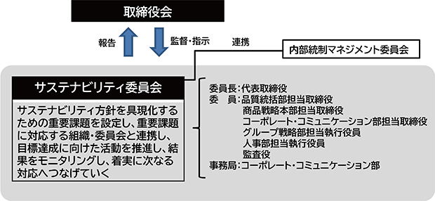

文中における将来に関する事項は、当連結会計年度末現在において判断したものであります。
トーホーグループは1947年の創業以来、「食を通して社会に貢献する」の経営理念のもと、「美味しさ」そして「安心・安全、健康、環境」を経営のキーワードに「食」の様々なシーンを支え続ける企業グループとして、外食事業者の皆様のお役に立つ商品やサービスの提供に努め、「外食ビジネスをトータルにサポート」できる国内でも稀有な企業グループとして事業を拡大しております。
人と食との関わりの中で、経営理念、経営のキーワードを基本とした価値ある商品やサービスを提供し、お客様満足度を高めていくこと、さらには株主様、お客様、取引先様、社員・従業員、そして地域社会といったあらゆるステークホルダーから信頼され必要とされる経営を実践することが企業価値を高めていくものと考えております。
当社グループではこうした基本的な考え方のもと、持続的成長と収益力の向上、組織の活性化と人材の活性化、顧客・現場視点の経営、コンプライアンスと適時情報開示、スピード経営を経営方針とし、企業価値を高める経営を進めてまいる所存であります。
2020年からの新型コロナウイルス感染症の世界的な流行により、一時期は大恐慌以来最悪と言われる景気の落ち込みを記録したものの、現在は世界中でアフターコロナの社会経済活動の正常化が進む中、景気は緩やかな回復基調で推移しております。一方、不安定な国際情勢、食品・エネルギー価格の高騰など、景気減退への懸念は予断を許さない状況が継続しております。
日本経済においても、アフターコロナに向けた動きが本格化し、足元ではコロナ禍以前の社会経済活動に戻りつつあります。一方、中長期的には、人口の減少や高齢化の進行による経済成長の停滞など、日本経済を取り巻く環境の厳しさは継続しております。
このような状況のなか、当社グループの主な販売先である外食産業においては、コロナ禍に伴う行動規制の解除後は人流が大きく回復し、当社グループの業績も堅調に推移しております。
ディストリビューター（業務用食品卸売）事業は、業務用食品専業卸の業界最大手として、外食産業のお客様に貢献しております。事業活動の歴史が長く基盤が充実している西日本に対し、関東地区と海外は新たな成長領域として事業基盤の強化を推進しております。そのための戦略として、近年はＭ＆Ａに注力し、関東地区は13社、海外は３ヵ国11社がグループ入りいたしました。今後も関東地区と海外の事業基盤の強化を進めるとともに、Ｍ＆Ａやアライアンスを活用した未開拓エリアへの進出も検討してまいります。
キャッシュアンドキャリー（業務用食品現金卸売）事業は、中小飲食店の毎日の仕入れにお役立ていただく、プロの食材の店「Ａ-プライス」などの業務用食品を販売する店舗を関東以西に95店舗展開しております。顧客ニーズに対応した食材提案や店舗の出店・改装などを通し、引き続き中小飲食店の発展に貢献いたします。一方、近年は「A-プライスオンラインショップ」やフランチャイズ２号店を開店するなど、新たな収益の柱の育成を図っております。
食品スーパー事業は、兵庫県南部で地域密着型の食品スーパー「トーホーストア」を18店舗展開（提出日現在）しております。なお、同事業は2025年１月末までに株式会社バローホールディングスの連結子会社３社、株式会社三杉屋およびゴダイ株式会社へ一部店舗を事業譲渡し、残りの店舗については閉鎖し、食品スーパー事業から撤退を予定しております。譲渡理由につきまして、近年は競争激化に伴い業績の低迷が続くなかで、今後も当社グループで事業を継続することは困難と判断する一方、従業員の雇用の維持、地域の食のインフラである店舗の存続を実現できる先に事業を譲渡することが最善であると判断した結果となります。
フードソリューション事業は品質管理、業務支援システム、業務用調理機器、店舗内装設計・施工など「外食ビジネスをトータルにサポートする」様々なソリューションの提供を引き続き強化しております。特に近年は飲食店運営の深刻な課題である人手不足解決のため、省力化や時短が図れる業務用調理機器や、受注や損益管理などの店舗運営の効率化を図る業務支援システムの提案に注力しております。
当社グループは、持続的成長と収益力の向上を通じて、企業価値を継続的に高めていくことを経営目標の一つとしております。具体的には事業の成長を示す「売上高」と収益力を示す「営業利益」、また最終的に事業のリスクを負担する株主様からお預かりしている資金に対しそのリスクに見合う利回りが確保されているかという観点から「ＲＯＥ」を中長期的な指標としております。
<売上高>
<営業利益>
（注）売上高営業利益率 ＝（営業利益）÷（売上高）
（注）第68期、第69期および第70期の営業利益前期比並びに第68期および第69期の売上高営業利益率は、営業損失を計上しているため記載しておりません。
<ＲＯＥ（自己資本当期純利益率）>
（注）ＲＯＥ ＝（親会社株主に帰属する当期純利益）÷（（期首自己資本＋期末自己資本）÷２）
自己資本 ＝ 純資産合計－新株予約権－非支配株主持分
（注）第68期のＲＯＥは、親会社株主に帰属する当期純損失を計上しているため記載しておりません。
コロナ禍が落ち着くとともに、社会経済活動が活発になり、加えてインバウンドが一部戻ってくるなどで外食市場は順調に回復しており、当社グループの業績も再び成長軌道に戻りつつあります。一方で、人手不足、原材料費や物流費の上昇などは当面続くものと考えられます。加えて少子高齢化に伴う国内外食市場の変化も予測されます。
このような環境下において、当社グループは次期中期経営計画ＳＨＩＦＴ－ＵＰ ２０２７において、持続的な成長を力強く実現するための「新たな成長ステージへの変革」を実行するとともに、持続可能な社会の実現への貢献と自社の持続的な成長を実現する「サステナビリティ経営の推進」等に取り組み、中長期的な企業価値向上を目指してまいります。
［新たな成長ステージへの変革］
１．エリア毎の市場環境に沿った事業展開へのシフト
・首都圏再編
・沖縄再編
２．新たな市場の開拓
・プライベートブランド商品強化
・キャッシュアンドキャリー（Ｃ＆Ｃ）事業拡大
・海外事業拡大
３．外食ビジネスをトータルにサポートする機能の拡充
・外食企業向け業務支援システム刷新
・フードソリューション（ＦＳＬ）事業拡充
４．情報技術の最大活用による生産性の向上
・ＩＴ／ＤＸ戦略の推進
５．Ｍ＆Ａ、アライアンスの活用
・Ｍ＆Ａの継続
［サステナビリティ経営の推進］
１．美味しくて、安心・安全な食の提供
・グループに起因する食品事故ゼロ
・サステナビリティフード開発強化
２．持続可能な経営の継続
・ガバナンスの更なる強化
３．未来へ繋げるための環境対策の取り組み
・2030年度のCO2排出量を2013年度比で46％削減（Scope1,2）
４．個性の尊重と能力を発揮できる組織の構築
・従業員エンゲージメント向上
・健康経営の深化
・ダイバーシティの推進
・自律的なキャリア形成支援の継続・充実
５．地域社会発展への貢献
・食を通して豊かな地域づくりに貢献する活動の継続
次期（2024年２月１日から2025年１月31日まで）の見通しにつきましては、企業業績の回復とともに賃上げによる消費の回復も期待され景気は緩やかに上向くと思われ、当社グループの得意先が属します外食市場も引き続き拡大することが期待されます。一方で人件費上昇等による物流費や諸物価の上昇、原材料の高騰に伴う調達コストの上昇は今後も続くものと思われ、依然として先行き不透明な状況が想定されます。
このような状況の中、当社グループは次期から始まる新たな中期経営計画（３カ年計画）「ＳＨＩＦＴ－ＵＰ ２０２７」をスタートさせ、業容拡大と収益力向上を実現するとともに、持続可能な社会に貢献できる企業グループの実現を目指した様々な施策を開始いたします。
主力事業の一つでありますディストリビューター事業では、更なるシェア拡大に向けセールスを増員し、重点エリアでの新規得意先獲得を進めてまいります。また、営業補助業務の強化に加え、庫内作業の効率化を推進し、セールスが営業活動に専念できる体制を一層拡充してまいります。一方で既存外食事業者の満足を高めるため、商品や当社グループが持つサービスの提案を一層強化してまいります。特に顧客ニーズに添って開発されたプライベートブランド商品や厨房内での作業の効率化が図れる商品などの提案を強化してまいります。また中食（なかしょく）市場や病院・介護施設給食は引き続き重要業態として取り組んでまいります。
次期中期経営計画での成長戦略の一つである「エリア毎の市場環境に沿った事業展開へのシフト」では、当期に株式会社トーホー沖縄を設立したことに続き、来期は首都圏において「マザー＆フロント体制」の構築をスタートさせ、大市場である首都圏の配送網を充実させることで、顧客へのサービス向上に努めシェア拡大を図ってまいります。「マザー＆フロント体制」は既存の支店網をベースにスタートさせますが、2024年12月には横浜に統合拠点を設置し、本格稼働させる計画であります。
一方のキャッシュアンドキャリー事業は、新規出店（３店舗計画）、既存店舗の改装（７店舗計画）を計画的に進め、顧客サービスの充実を図り、業容を拡大してまいります。品揃え面では自社焙煎コーヒーをはじめとするプライベートブランド商品を一層充実させる一方で、地域特性に応じた商品の品揃えを充実させ、地域に根ざした店舗作りを更に進めてまいります。Ａ-プライスアプリは会員である顧客に対しそれぞれのニーズに合った最適な提案ができるように機能強化してまいります。また、店舗運営の省力化と顧客満足度の向上を目指して電子棚札を試験導入し、全店舗導入に向けた検討を開始いたします。当事業のフランチャイズ店舗は今期末時点で２店舗でありますが、ノウハウの蓄積を進め、来期は新たに２店舗の新規加盟を目指して取り組んでまいります。ＥＣビジネスにつきましては、顧客獲得に向け、新たなＥＣサイトへの出店、宣伝広告の試験運用なども試みながら業務用食材専門サイトとしての成長を図ってまいります。
フードソリューション事業では、品質・衛生管理サービス、外食企業向け業務支援システム提供、業務用調理機器販売、店舗内装設計・施工等、外食事業者のあらゆるニーズに当社グループが一体となって対応できる体制を一層充実させてまいります。
以上のような取り組みはディストリビューター事業、キャッシュアンドキャリー事業の各社が主要地域で開催する大規模展示商談会や各支店・店舗で開催するエリア別・テーマ別展示会を通じてきめ細かく情報発信をしてまいります。
食品スーパー事業につきましては、2025年１月末までに事業を終えるべく、店舗の譲渡や閉鎖を計画的に進めております。
以上により、次期の連結業績見通しといたしましては、売上高2,460億円（前期比0.4％増）、営業利益は物流費等の上昇も見込み73億円（前期比6.6％減）、経常利益73億円（前期比8.4％減）、親会社株主に帰属する当期純利益40億円（前期比11.0％増）を予想しております。
当社は、外食事業者に食品とそれに関連するサービスを提供する企業グループとしての責任を自覚し、食を通して「社員・従業員」「お客様」「取引先様」「株主様」そして「地域社会」の５つのステークホルダーを豊かにする企業活動を実践しております。そうした中、気候変動などの地球環境問題に対しては、環境負荷低減とカーボンニュートラルに向けた取り組みや、生物多様性への配慮を行うことによってリスクに対応するとともに、持続可能な社会の実現と事業の安定的な成長を目指すことをサステナビリティ方針としております。
この方針のもとサステナビリティ経営を推進するため、当社は「美味しくて、安心・安全な食の提供」「持続可能な経営の継続」「未来へ繋げるための環境対策の取り組み」「個性の尊重と能力を発揮できる組織の構築」「地域社会発展への貢献」の５つのマテリアリティを掲げて重要テーマに取り組んでおります。
当社はサステナビリティ方針のもと、経営理念である「食を通して社会に貢献する」ことを継続実施し、より一層社会から信頼され、必要とされる企業グループを目指し、中長期的な企業価値の向上につなげていくことを目的に、「サステナビリティ委員会」を設置しております。サステナビリティ委員会は、代表取締役社長を委員長、取締役・執行役員および常勤監査役を委員として構成されており、サステナビリティ方針に基づいた経営を実践するための方策やマテリアリティの特定、取り組みの推進とモニタリングを行い、定期的に取締役会に報告・提言を行っております。

当社では、持続的な企業価値の向上のために、サステナビリティ項目を含めた全社横断的に対応が必要となるリスクへの対応を行っております。特に当社が最重要課題と捉えているマテリアリティを中心にリスクの特定・評価を行い、リスクマネジメントの強化に取り組んでおります。
トーホーグループでは、気候変動への対応は経営上の重要課題の一つとして捉えており、「未来へ繋げるための環境対策の取り組み」をマテリアリティの一つとして掲げております。2050年カーボンニュートラルの実現を目指すことで、当社グループの持続的な成長と価値向上のための新たなビジネスチャンスの創出を推進してまいります。
サステナビリティ委員会では、経営戦略、事業計画に関連する気候変動への対応を最重要課題の一つとして取り組んでおります。2050年カーボンニュートラルに向けたリスクや機会について定期的に検討・審議し、また必要に応じて取締役会へ報告しております。
当社グループの事業活動に影響を与える可能性がある気候関連のリスクと機会を、シナリオ分析によって特定し影響度を評価いたしました。この結果を踏まえて、影響度の大きいリスクの低減と機会の獲得に向けた対応策を検討しております。
抽出した重要リスクの中では、中長期的に「温室効果ガス排出規制強化と炭素賦課金の上昇」が最も大きな財務インパクトになると考えております。当社グループの主要事業であるディストリビューター（業務用食品卸売）事業は全国の主要都市に事業所を置いておりますが、各事業所には在庫保管用の常温倉庫と冷凍・冷蔵庫を設置しております。一方、キャッシュアンドキャリー（業務用食品現金卸売）事業も全国に展開している90数店舗で冷凍ショーケースや在庫保管用の冷凍・冷蔵庫を設置しております。今後、温室効果ガス排出規制が強化されるとこうした冷凍・冷蔵庫の冷媒を自然冷媒に入れ替えるなどの必要性が出てくることが想定されます。また、ディストリビューター事業では自社トラックで得意先への配送を行っておりますが、現状配送用トラックはガソリンまたは軽油を使用した車両であります。今後、温室効果ガス抑制のため、これらをハイブリット車両やEV車両などに置き換えていくことも必要になってくると考えられます。こうした対応を進めることは、今後賦課金額が高くなると予想される炭素賦課金の負担軽減にもつながりますので、当社グループとしては計画的に設備・車両の更新投資を行っていきたいと考えております。一方、当社では比較的規模の大きい事業所や駐車場を利用して太陽光パネルによる発電を行っており、こうした再生エネルギーの活用も継続してまいります。以上の通り、当社グループはこれからも当社事業に関わるステークホルダーの皆さまとともに持続可能な社会の実現に資する取り組みを計画的に進めてまいります。
当社グループでは、経営に関わるあらゆるリスクの管理を行い、取締役会の承認と監督のもと、各種委員会が対策を協議・決定しておりますが、気候変動に関しては環境マネジメント委員会を設けサステナビリティ委員会と連携して、シナリオ分析による影響度評価で特定したリスクへの対策を策定・実施しております。
当社グループでは、Scope1、Scope2を国内グループ会社と一部の海外グループ会社の範囲で計算しております。Scope3は国内グループ会社の範囲で現在集計中であり、結果が出次第公表する予定であります。
当社グループでは、2050年カーボンニュートラルの実現を目標にしております。そのため、気候変動のリスクと機会を特定・評価しておりますが、今後のカーボンニュートラルに向けた取り組みを推進していくために温室効果ガス削減の中期目標を設定して取り組んでまいります。
具体的には、2030年までに、2013年の推定温室効果ガス排出量（Scope1,2合計52,200ｔ-CO２）の46％削減に取り組んでまいります。当社グループではScope2(電力)による排出量が総排出量の80％を占めていますので、LED電気の導入を更に進めることや節電効果のある、またエネルギー消費効率の良い最新設備への更新や節電設備の導入などを計画的に進めてまいります。また、Scope2(電力)以外では、ガソリン・軽油由来の排出量削減のため、エコ安全ドライブの励行やドライブレコーダーによる安全運転管理の実施、更には配送車両のハイブリット車両やEV車両への転換などの検討を進めてまいります。
(3) 人的資本・多様性への対応方針
当社グループは経営憲章の中で「企業は人である」と定め、企業の持続的成長には従業員の成長が必要不可欠であり、その中でも健康の維持・向上は従業員とその家族の幸せに欠かせない最も基本的な要素であると考えております。
そのため、従業員が健康で活力に満ち、最高のパフォーマンスを持続できる労働環境の整備に取り組む「健康経営」の推進を最重要テーマと位置づけ、要治療者の重症化予防や生活習慣の改善、ヘルスリテラシー向上に取り組んでおります。その結果、特に優良な健康経営を実践している企業として「健康経営優良法人～ホワイト500～」に2019年から2023年まで、５年連続５回の認定を受けました。
「健康経営」を取り組む体制として、当社の代表取締役社長が決定した「健康基本方針」に基づき、グループ各社にて施策の企画、実践を推進しております。またグループ横断的な委員会組織「内部統制マネジメント委員会」にて健康課題の分析結果、施策の効果等を協議し、産業医等外部専門機関と連携して各種施策を検討・展開しております。
また、「自ら考え、自ら行動し、自ら成長する自律型人材」という当社グループが従業員に求める基本的な考え方、および、サステナビリティ方針のマテリアリティの一つである「個性の尊重と能力を発揮できる組織の構築」に基づき、グループ横断的に活躍する人材を育成すべく、多様な人材の活躍推進（ダイバーシティ）やグループ内の会社間異動の活性化、自律的なキャリア形成支援に取り組んでおります。今後の海外事業展開を見据え、海外勤務意向のある社員を公募で登録し、語学研修の受講とともに、国内の海外部門への異動や海外派遣などの実践を通じてグローバルに活躍する人材層を蓄積してまいります。
従業員が働きがいや誇りを持って働くことの実現を通して、従業員エンゲージメントと企業価値の向上を目指してまいります。
② 指標と目標
当社グループは前述の戦略を着実に推進するため、以下の通り人的資本に関する非財務指標を設定し、進捗を管理しております。
(注) １．エンゲージメントサーベイを見直し、その結果を起点とした目標を2024年度中に策定します。2023年度実績は、ストレスチェックの設問「働きがいのある仕事だ」に「そうだ・まあそうだ」と回答した割合です。
２．国内連結グループ全体
３．当社および国内主要会社（㈱トーホーフードサービス、㈱トーホーキャッシュアンドキャリー、㈱トーホービジネスサービス）
４．当社および以下の会社（㈱トーホーフードサービス、㈱トーホーキャッシュアンドキャリー、㈱トーホービジネスサービス、㈱トーホー・北関東、㈱トーホー沖縄、関東食品㈱、㈱エフ・エム・アイ、㈱トーホー・コンストラクション、㈱アスピット）
当社グループの経営成績及び財政状態に重要な影響を及ぼす可能性のある主要なリスクは以下のようなものがあります。ただし、すべてのリスクを網羅したものではなく、当連結会計年度末現在においては予見できないリスク、または重要と見なされていないリスクの影響を受ける可能性があります。
当社グループではこれらのリスクの影響を最小にするための様々な取り組みを行ってまいります。
（1）消費者や得意先のニーズへの対応遅れ
当社グループは外食産業や一般消費者に食品と様々なサービスをお届けしておりますが、外食市場の動向や一般消費者の嗜好の変化などに対する情報収集とその対応が遅れることで、当社の品揃えやサービスが市場に受け入れられず、市場シェアを落とすリスクがあります。
こうしたリスクを避けるためグループ各社では、日々の営業活動を通じてお客様ニーズの把握に努めるとともに、メーカーや仕入先など様々な取引先とのコミュニケーションを密にし、業界・顧客動向に関する情報を入手し、得た情報を分析し、共有して様々なニーズの変化に対応しております。
（2）品質および衛生管理上の事故
当社グループの主要取扱品は食品であり、万が一、品質管理や衛生管理、表示上の不備による事故等が発生した場合、販売の大幅な減少や当社事業への信用失墜など長期的なリスクにつながる可能性があります。
当社グループは品質・衛生管理を専門に行う部署（品質保証部）を置いており、各事業所への定期的な品質・衛生検査、表示チェックを実施し、改善すべき点があれば改善指導を行っております。一方、当社グループのプライベートブランド商品につきましては、商品開発時に品質保証部が製造工場の検査を実施しております。また、あらゆる機会をとらえて品質管理や衛生管理等について従業員向けの教育を実施し、意識の向上に努めております。
（3）海外からの商品調達の停滞等
当社グループが取り扱う商品はその原料や商品自体を海外の産地や工場からの輸入に頼っているものがあります。万が一、産地などで事故や紛争などにより生産が止まった場合や輸送時の事故等により輸入が止まった場合、当社の販売に大きな支障を来すリスクがあります。また輸入に伴う為替変動により、原価が上昇し利益を圧迫するリスクがあります。
こうしたリスクへの対応として、海外の社会情勢や業界の変化に常に注意し、影響を及ぼすと考えられる情報に対しては国内と現地で情報共有し、対応するようにしております。また、可能な限り複数の仕入先を通じた調達原産国の複数化による持続可能な調達を行っております。また、当社が直接輸入する商品は可能な限り円による決済とすることで為替リスクを抑えております。
（4）海外でのカントリーリスクや紛争
当社グループはシンガポール、マレーシア、香港で子会社が事業を展開しております。各国での重大な法改正や諸制度の変更による大幅なコスト上昇や新たな制約により、また政変、テロ等の発生により、現地子会社の事業の継続に支障を来すリスクがあります。
当社グループでは、常日頃から現地との緊密な情報交換を行うとともに、現地政府機関、日本大使館、および外務省からの発信情報に常に注意し、留意すべき情報に対しては、まずは従業員の安全確保を最優先に考えたうえでの諸施策を講じることとしております。
（5）人材確保の計画未達
当社グループの事業では配送や店頭販売などに多くの従業員が従事しております。国内の少子高齢化の進展が今後も進み、人材獲得競争激化の結果、人材の確保が計画通りに進まなかった場合、従来通りの事業運営に支障が出たり、大幅にコストが上昇したりするリスクがあります。
当社グループでは「企業は人である」の考えのもと、従業員満足を高めるための諸施策の継続的実施や健康経営の実践により従業員の離職防止に努めております。また、ITを活用した生産性向上、業務効率化による働き方改革を継続しております。一方、採用面では多様な人材から選ばれる会社となるための人事・給与制度改革の継続、教育体系の整備を継続的に行っております。また、多様な人材（女性、障がい者、高齢者等）の活躍推進にも取り組んでおります。
（6）資金調達の計画未達
当社グループが事業を展開するために必要な資金が金融市場の激変や当社の業績悪化により計画通り進まなくなり、事業運営に支障を来すリスクがあります。
こうしたリスクに対して、当社グループでは調達先および調達方法が限定的になることを避け、適度に分散させることで資金調達の多様性を保っております。調達は保守的に計画することで、金融市場の悪化に対しても一定の余裕をもって対応しております。また、不測の事態に備えて複数行とコミットメントライン契約を締結しております。
（7）急激な金利の上昇
当社グループは事業運営に必要な資金の一部に借入金を利用しております。借入金の財務リスクは適正と考える資本構成に基づき管理しておりますが、経済情勢の変化などにより、調達金利が急激に上昇した場合、当社の業績に影響を与えるリスクがあります。
当社グループでは、常日頃から金利情勢に影響を与えるであろうと思われるマクロ経済等の定期的なモニタリングを行っております。また実際の調達金利の動向を注視して資金を調達しております。金利情勢によっては金利をヘッジする手段を機動的に運用しております。
（8）コンピューター基幹システムのダウン
当社グループでは得意先からの受注、在庫管理、仕入先への発注など営業活動全般の他、経理・人事等の事務処理、そして社内の情報共有等あらゆる面でコンピューターを利用しており、これが事故や災害、ウイルス感染により使えなくなることで事業が停滞するリスクがあります。
災害や事故発生時に重要データが滅失しないように、災害対策が施された外部のデータセンターに保管するとともに、定期的にバックアップデータを遠隔地へ運搬し、保管しております。
一方、コンピューターウイルスに対しては、外部からの不正侵入を防ぐ機器（ファイアウォール）に加えて、ウイルス対策ソフトウェアを導入しております。また、ウイルス感染による事業活動への影響やそれを防ぐための対策、また疑わしい現象への対応について社内教育を継続的に実施しております。
（9）伝染病等の拡大
2024年１月期はアフターコロナの社会経済活動の正常化が進む中、当社業績も堅調に推移いたしましたが、今後も予期せぬ伝染病等の感染拡大により、従業員の健康が害されるリスク、外食需要の急減により事業に多大な影響を及ぼすリスクがあります。
当社グループでは、従来から毎月１４日を「食の安心・安全の日」と定め、品質保証部を中心にウイルスや病原菌などに対する様々な情報の発信を行い全従業員の意識向上を図っております。新型コロナウイルス感染症拡大の事態に対しては、グループを横断した方針や対策を立案実施する委員会をいち早く立ち上げ対応してまいりました。今後もこの経験・ノウハウを活かしてまいります。また、営業面では飲食店、宿泊施設、病院・介護施設、リゾート施設など多岐にわたる取引業態への影響に常に注意を払い、リスクの小さい業態の強化など柔軟に対応しております。
（10）大規模な自然災害の発生
当社グループは国内各地および海外ではシンガポール他２か国を合わせて200を超える拠点を構え、営業を行っております。こうした拠点やその周辺で大規模な地震や風水害などが発生した場合、各拠点での事業運営に支障を来すリスクがあります。
自然災害は防ぐことはできませんが、災害発生時には安否確認システムを利用し、従業員の安全確認を行い、被災等がある場合は早期に総力をあげて対応できるよう緊急連絡網を整備しております。また事業所ごとに緊急避難場所や災害発生時の行動指針を掲出し、日ごろから安全意識の向上を図っております。また、各地域の主要拠点にはマスクや水などの緊急物資を備蓄しております。こうした常日頃からの準備を怠らないことで、災害発生時の早期復旧に備えております。
文中の将来に関する事項は、当連結会計年度末現在において判断したものであります。
当連結会計年度（2023年２月１日から2024年１月31日まで）におけるわが国経済は、ウクライナ情勢をはじめとする地政学リスクの長期化に加え、世界的な金融引き締めによる影響や中国経済の先行き懸念などは依然として継続しているものの、アフターコロナの社会経済活動の正常化が進む中、景気は緩やかな回復基調で推移いたしました。
当社グループが属します業務用食品卸売業界においては、新型コロナウイルス感染症の５類移行に加え、インバウンド需要の増加もあり、飲食店や観光地への人流が回復したことで事業環境は改善いたしました。一方で、原材料や資源の高騰を背景とした食品価格の値上げに加え、人手不足に伴う人件費や運賃など諸コストの上昇などもあり先行き不透明な経営環境が続きました。
このような状況のなか、当社グループは第８次中期経営計画（３ヵ年計画）「ＳＨＩＦＴ ＵＰ ２０２３」（2022年１月期（2021年度）～2024年１月期（2023年度））の最終年度として、新たな環境に適合し、成長し続ける筋肉質な企業グループへの変革を図るべく、５つの重点施策に沿った取り組みを引き続き推進いたしました。
以上の結果、当連結会計年度の業績につきましては、前期に新型コロナウイルス感染症の影響が一定程度残っていたことへの反動に加え、外食需要の堅調な回復に併せて既存得意先の深耕や新規得意先の獲得を積極的に進めたことにより、売上高は2,449億30百万円（前期比13.6％増）となりました。また、増収および収益構造改革による損益分岐点の引き下げ効果により、営業利益は78億19百万円（同114.2％増）、経常利益は79億71百万円（同105.6％増）となりました。親会社株主に帰属する当期純利益は36億５百万円（同258.1％増）となり、各段階利益で創業来の最高益となりました。
セグメント別の概況につきましては、次のとおりであります。
なお、当連結会計年度より、報告セグメントの区分を変更しており、前連結会計年度との比較・分析は変更後の区分に基づいて記載しております。
社会経済活動が正常化するなかで、外食や旅行機会の増加、宴会・会合などの再開に加え、インバウンド需要も増加したことで、ホテルや飲食店、観光地への人流が大きく回復し、外食事業者を主な販売先とする当事業部門の事業環境も改善いたしました。
このような状況のなか、当事業部門では需要が急増する既存得意先のニーズに応える営業を強化するとともに、各地で開業したホテルや商業施設などの新規得意先獲得を推進いたしました。また、顧客ニーズを取り入れて開発されたプライベートブランド商品は、差別化できる商品として販売をさらに強化しました。株式会社トーホーフードサービスでは、各事業所のバックオフィス業務の基幹店集約による効率化と、それによる営業補助業務人員の拡充を推進し、各事業所が営業に専念できる体制の構築を引き続き強化いたしました。
一方、株式会社トーホーフードサービスが全国規模で開催する業界最大級の展示商談会を８会場で開催したほか、当事業部門に属する各社も各地域で小規模展示会やテーマ別展示会を積極的に実施するなど、商品・サービス提案を強化いたしました。
なお、沖縄地区につきましては、更なる事業力強化を図るべく、８月に株式会社トーホーフードサービス沖縄支店、株式会社トーホーキャッシュアンドキャリー沖縄ブロック（Ａ-プライス７店舗）を株式会社トーホー・仲間（本社：沖縄県石垣市）に承継させる会社分割を行い、新たに株式会社トーホー沖縄（本社：沖縄県浦添市）として発足いたしました。
以上の結果、前期に新型コロナウイルス感染症の影響が一定程度残っていたことへの反動に加えて、既存得意先に対する売上の回復や新規得意先の獲得も進んだことにより、当事業部門の売上高は1,728億64百万円（前期比16.9％増）となりました。営業利益は増収に加え収益構造改革による損益分岐点の引き下げ効果により、58億64百万円（同110.8％増）と過去最高益を達成いたしました。
当事業部門においてもアフターコロナに向けた動きが進むなかで、プロの食材の店「Ａ-プライス」を中心に、主要顧客である中小飲食店に対して「真夏のグルメフェア」「北海道フェア」といったテーマ別の企画を通じたメニュー提案を計画的に行いました。コロナ禍で控えていた設備投資については本格的に再開し、４月に直営店で約３年振りの新店となる「Ａ-プライス広島八丁堀店」（広島市中区)を開店し、６店舗の改装を実施いたしました。また、11月にはフランチャイズ２号店となる「Ａ-プライス福江店」（長崎県五島市）を開店いたしました。一方で、展示商談会を全国10会場で開催し、内３会場では株式会社トーホーフードサービスと共同で開催し、グループシナジーを発揮した提案を行いました。顧客ニーズに沿って開発したプライベートブランド商品や新商品の積極提案を行うとともに、人手不足や調理時間短縮につながる機器に至るまで、お客様の課題解決に向けたトータルサポートを展開しました。
以上の結果、当事業部門の売上高は中小飲食店への販売を強化したことで435億24百万円（前期比11.5％増）、営業利益は増収に加えコスト・コントロールを推進したことで、18億28百万円（同86.4％増）となりました。
当事業部門では、競争激化が続く厳しい事業環境の中、店舗閉鎖を行った結果、売上高は151億45百万円（前期比6.2％減）、営業損失は６億88百万円（前期は７億28百万円の営業損失）となりました。
なお、2023年10月23日付「（開示事項の経過）食品スーパー事業の事業譲渡に関するお知らせ」にて公表のとおり、株式会社トーホーストアの事業の一部を順次譲渡するとともに、譲渡対象外となった店舗及び施設については、2025年１月末までを目途に全て閉鎖し、食品スーパー事業を廃止することを決定しております。2024年３月18日時点で16店舗を株式会社バローホールディングス（株式会社八百鮮へ３店舗、株式会社ヤマタへ２店舗、中部薬品株式会社へ11店舗）へ、４店舗を株式会社三杉屋へ、３店舗をゴダイ株式会社へそれぞれ譲渡することが決定しており、譲渡時期に合わせて順次店舗を閉鎖しております。また、譲渡対象外となっている残りの店舗につきましては引き続き譲渡先を検討しております。
当事業部門では、品質・衛生管理サービス、外食企業向け業務支援システム提供、業務用調理機器販売、店舗内装設計・施工などの「外食ビジネスをトータルにサポートする」機能を引き続き強化するとともに、グループ各社の展示商談会に積極的に出展するなどグループシナジーの発揮に努めました。
業務用調理機器を取り扱う株式会社エフ・エム・アイでは、需要が急回復する外食事業者に向けて、省力化を図れる高性能調理機器の提案を強化いたしました。また、受発注や損益管理など外食企業向け業務支援システムを提供する株式会社アスピットは、飲食店の生産性向上に向けたＩＴ化に貢献できる提案を積極的に行うなど新規得意先の獲得を推進いたしました。
以上に加え、建築関連の期中完工が増加したことなどにより、売上高は133億97百万円（前期比7.2％増）となりました。また、セグメント内で相対的に利益率の高い業務用調理機器や業務支援システムの販売が好調に推移したことで、営業利益は８億15百万円（同32.4％増）となりました。
(総資産)
当期末の総資産は前期末に比べ９億45百万円増加し、882億97百万円となりました。主な要因は、業績の回復に伴う現金及び預金の増加14億87百万円、年金資産の増加に伴う退職給付に係る資産の増加13億８百万円に対し、のれんの減少19億19百万円などによるものであります。
(負債)
当期末の負債は前期末に比べ38億66百万円減少し、607億34百万円となりました。主な要因は、支払手形及び買掛金の増加17億62百万円に対し、借入金の返済に伴う短期借入金の減少27億94百万円、長期借入金の減少26億７百万円などによるものであります。なお、借入金の総額は214億27百万円（前期末268億27百万円）となりました。
(純資産)
当期末の純資産は前期末に比べ48億11百万円増加し、275億64百万円となりました。主な要因は、親会社株主に帰属する当期純利益36億５百万円及び配当金の支払いによる利益剰余金の増加29億60百万円、保有する有価証券の当連結会計年度末の時価評価額が前連結会計年度末の時価評価額を上回ったことによるその他有価証券評価差額金の増加６億24百万円、前連結会計年度末に比べ円安が進んだことによる為替換算調整勘定の増加６億17百万円、年金資産の増加に伴う退職給付に係る調整累計額の増加６億13百万円などによるものであります。自己資本比率については当連結会計年度末30.8％と前連結会計年度末の25.7％に比べ5.1ポイント上昇いたしました。
当連結会計年度における各キャッシュ・フローの状況は以下のとおりです。
(営業活動によるキャッシュ・フロー)
営業活動によるキャッシュ・フローは、93億３百万円の収入（前期41億10百万円の収入）となりました。
主な収入は税金等調整前当期純利益による増加59億28百万円（前期７億２百万円）、減価償却費20億７百万円（前期20億60百万円）、減損損失16億９百万円（前期14億71百万円）、事業整理損失15億51百万円、仕入債務の増加17億14百万円（前期26億65百万円の増加）などに対し、主な支出は事業整理損失引当金の減少11億39百万円（前期15億44百万円の増加）、法人税等の支払額18億28百万円（前期10億41百万円）などであります。
(投資活動によるキャッシュ・フロー)
投資活動によるキャッシュ・フローは、12億51百万円の支出（前期９億31百万円の支出）となりました。
これは主に、キャッシュアンドキャリー事業の店舗の出店、改装に伴う固定資産の取得による支出20億８百万円（前期11億９百万円）によるものであります。
(財務活動によるキャッシュ・フロー)
財務活動によるキャッシュ・フローは、65億20百万円の支出（前期44億77百万円の支出）となりました。
これは主に、長期借入れによる収入68億円（前期82億円の収入）に対し、長期借入金の返済による支出117億円（前期126億１百万円の支出）などによるものであります。
以上の結果、当期末の連結ベースの現金及び現金同等物の残高は、前連結会計年度末に比べ、17億４百万円増加し、92億16百万円となりました。
仕入実績をセグメントごとに示すと、次のとおりであります。
(注) セグメント内及びセグメント間の取引については相殺消去しております。
販売実績をセグメントごとに示すと、次のとおりであります。
(注) セグメント内及びセグメント間の取引については相殺消去しております。
文中の将来に関する事項は、当連結会計年度末現在において判断したものであります。
当社グループの連結財務諸表は、わが国において一般に公正妥当と認められている会計基準に基づき作成されております。この連結財務諸表の作成に当たりましては、連結決算日における資産・負債の報告数値及び報告期間における収益・費用の報告数値に影響を与える見積りは、主に投資の減損、資産除去債務、繰延税金資産の回収可能性、貸倒引当金、退職給付債務及び退職給付費用であり、継続的な評価を行っております。これらの見積り及び判断・評価については、過去の実績や状況に応じて合理的と考えられる要因等に基づき行っておりますが、見積り特有の不確実性があるため、実際の結果は異なる場合があります。
なお、当社グループの連結財務諸表で採用する重要な会計方針は「第５ 経理の状況 １ 連結財務諸表等(1) 連結財務諸表 注記事項(連結財務諸表作成のための基本となる重要な事項)」に記載しております。
当連結会計年度は、業績の回復に伴い受取手形、売掛金及び契約資産、棚卸資産などの流動資産と支払手形及び買掛金などの流動負債が増加しました。一方、前期より継続して借入金の圧縮を進めたことにより、固定負債は減少しました。また親会社株主に帰属する当期純利益の計上などによる純資産の増加で、自己資本比率は30.8％に上昇するなど財政状態の改善が進みました。
個別の財政状態の分析については、「１ 経営成績等の状況の概要(2) 財政状態の状況」をご参照ください。
(売上高)
当連結会計年度の売上高は2,449億30百万円(前期比13.6％増)となりました。５月に新型コロナウイルス感染症が５類へ引き下げられるなど、社会経済活動の正常化に向けた動きがさらに加速いたしました。こうした環境下で、飲食店や観光地への人流は引き続き回復し、加えてインバウンド需要の増加もあり、ディストリビューター事業の売上が大きく伸長し、全体の増収要因となりました。
(売上総利益)
当連結会計年度の売上総利益は499億72百万円(前期比15.8％増)となりました。増収による売上総利益の増加とともに、プライベートブランド（ＰＢ）商品の売上構成比の増加やディストリビューター事業の売上総利益率の改善などが寄与いたしました。
(営業利益)
当連結会計年度の営業利益は78億19百万円(前期比114.2％増)となりました。増収に伴う売上総利益額の増加に加え、引き続きコスト・コントロールを継続したことにより前期に引き続き創業来の最高益を計上致しました。
(経常利益)
当連結会計年度の経常利益は79億71百万円(前期比105.6％増)となりました。営業利益の増加に伴い、経常利益も創業来の最高益となりました。
(親会社株主に帰属する当期純利益)
当連結会計年度の親会社株主に帰属する当期純利益は36億５百万円(前期比258.1％増)となりました。子会社ののれんの減損損失や食品スーパー事業の事業整理損失関連費用の計上があったものの、前期までに計上していた食品スーパー事業の事業整理損失引当金繰入額の戻し入れもあり特別損益が改善し親会社株式に帰属する当期純利益も創業来の最高益となりました。
当連結会計年度のキャッシュ・フローにつきましては、税金等調整前当期純利益の計上に加えて減価償却費などにより、営業キャッシュ・フローは93億３百万円のプラスとなりました。投資キャッシュ・フローは、設備投資の実行に伴い12億51百万円のマイナスとなりました。財務キャッシュ・フローは、コロナ禍で増加した長期借入金の返済を進めたことなどにより65億20百万円のマイナスとなり、当連結会計年度末の現金及び現金同等物は92億16百万円となりました。
個別のキャッシュ・フローの分析については、「１ 経営成績等の状況の概要(3) キャッシュ・フローの状況」をご参照ください。
ａ．資金需要
当社グループの資金需要の主なものは、成長戦略に基づく設備投資やＭ＆Ａ投資などの長期資金需要と商品仕入などの運転資金需要であります。当連結会計年度では店舗の新規出店・改装等23億81百万円の設備投資を実施しております。設備投資については連結会社各社が個別に策定したものについて当社がその投資判断について調整を行っております。
ｂ．財務政策
当社グループは事業活動のための流動性の維持と、適切な財務バランスの実現を方針としております。設備投資・出資などの長期資金需要に対しては、主に内部留保や金融機関からの長期借入金、資本市場からの調達により、運転資金需要には主に短期借入金により調達しております。なお、短期流動性を補完する目的でコミットメントライン契約を締結しております。
当連結会計年度につきましては、財務バランスの改善のために長期借入金の圧縮を進めた結果、借入金残高は214億27百万円（前期比54億円減）となっております。
また、グループ内資金の効率化を目的に、当社と主要な子会社での資金一元管理を行っております。
当社グループは、事業の成長を示す「売上高」と収益力を示す「営業利益」、最終的に事業のリスクを負担する株主から預かっている資金に対し、そのリスクに見合う利回りが確保されているかという観点から「ＲＯＥ」を中長期的な指標として位置付けております。
当連結会計年度における売上高は2,449億30百万円(前期比13.6％増)、営業利益が78億19百万円(前期比114.2％増)となり親会社株主に帰属する当期純利益36億５百万円（前期比258.1％増）となったためＲＯＥは14.5％に改善しましたが、引続きこれらの指標の継続的な改善に向け、取り組んでまいります。
（食品スーパー事業の事業譲渡に関する契約）
当社は、当社の連結子会社である株式会社トーホーストア（本社：神戸市東灘区、社長：橋本博文、以下「トーホーストア」といいます。）が営む食品スーパー事業の一部事業譲渡につきまして、株式会社バローホールディングス（本社：岐阜県恵那市、社長：小池孝幸、以下「バローホールディングス」といいます。）の100％連結子会社である株式会社八百鮮（本社：大阪府吹田市、社長：市原敬久、以下、「八百鮮」といいます。）、株式会社ヤマタ（本社：大阪府吹田市、社長：市原敬久、以下、「ヤマタ」といいます。）及び中部薬品株式会社（本社：岐阜県多治見市、社長：高巣基彦、以下「中部薬品」といいます。）、並びに株式会社三杉屋（本社：神戸市東灘区、社長：杉本光晴、以下「三杉屋」といいます。）、ゴダイ株式会社（本社：兵庫県姫路市、社長：浦上卓也、以下「ゴダイ」といいます。）に事業譲渡する契約を締結いたしました。
以上の結果、16店舗をバローホールディングス（八百鮮へ３店舗、ヤマタへ２店舗、中部薬品へ11店舗）へ、４店舗を三杉屋へ、３店舗をゴダイへ譲渡し、残りの５店舗（2024年４月23日現在）は2025年１月末までに閉鎖することになります。閉鎖する店舗につきましては、今後も可能な限り譲渡先を検討してまいります。
本件の対象である食品スーパー事業（トーホーストア）は、1963年に神戸市に出店して以来、兵庫県南部を中心に、最盛期である1980年代後半は最大69店舗を展開し、当社グループのコア事業である業務用食品卸売事業とともに経営の両輪を担っておりました。しかしながら、近年は競争激化の影響を受け、商圏の拡大には至らず、事業規模は縮小し、厳しい状況が続いております。
こうした状況を受け、当社は、業務用食品卸売事業への経営資源の集中を図るべく、食品スーパー事業の譲渡を進めるものであります。
(1）バローホールディングスへの譲渡
① 譲渡する事業の内容
ａ．八百鮮に譲渡する事業
トーホーストアが営む食品スーパー事業のうち、魚崎南店、垂水駅前店、上沢店に係る事業
ｂ．ヤマタに譲渡する事業
トーホーストアが営む食品スーパー事業のうち、六甲道駅前店、宝塚旭町店に係る事業
ｃ．中部薬品に譲渡する事業
トーホーストアが営む食品スーパー事業のうち、つつじが丘店、本多聞店、舞子店、上高丸店、志染駅前店、緑が丘店、大塩店、高砂店、西長田店、ポーアイ店、阪神大石駅店に係る事業
② 譲渡対象事業の資産、負債の項目及び金額（簿価は各譲渡日時点の簿価（予定））
③ 譲渡価額及び決済方法
ａ．譲渡価額 約426百万円
ｂ．決済方法 現金決済
④ 相手先の概要（2023年３月31日現在）
ａ．株式会社バローホールディングス
ｂ．株式会社八百鮮
ｃ．株式会社ヤマタ
ｄ．中部薬品株式会社
⑤ 日程
ａ．取締役会決議 2023年10月23日（中部薬品に対する西長田店、ポーアイ店、阪神大石駅店に係る事業譲渡については2024年３月18日）
ｂ．事業譲渡契約締結 2023年10月23日（中部薬品に対する西長田店、ポーアイ店、阪神大石駅店に係る事業譲渡については2024年３月18日）
(2）三杉屋への譲渡
① 譲渡する事業の内容
トーホーストアが営む食品スーパー事業のうち、平野祇園店、滝の茶屋店、旗塚店、明石小久保店に係る事業
② 譲渡対象事業の資産、負債の項目及び金額（簿価は各譲渡日時点の簿価（予定））
③ 譲渡価額及び決済方法
ａ．譲渡価額 約156百万円
ｂ．決済方法 現金決済
④ 相手先の概要（2023年３月31日現在）
（注）純資産、総資産、大株主および持株比率の記載については、相手先の意向により非公開とさせていただきます。
⑤ 日程
ａ．取締役会決議 2024年１月31日
ｂ．事業譲渡契約締結 2024年１月31日
(3）ゴダイへの譲渡
① 譲渡する事業の内容
トーホーストアが営む食品スーパー事業のうち、名谷北落合店、みかたプラザ店、大久保駅前店に係る事業
② 譲渡対象事業の資産、負債の項目及び金額（簿価は各譲渡日時点の簿価（予定））
③ 譲渡価額及び決済方法
ａ．譲渡価額 約40百万円
ｂ．決済方法 現金決済
④ 相手先の概要（2024年２月29日現在）
（注）純資産、総資産、大株主および持株比率の記載については、相手先の意向により非公開とさせていただきます。
⑤ 日程
ａ．取締役会決議 2024年３月18日
ｂ．事業譲渡契約締結 2024年３月18日
(4）譲渡対象事業の経営成績※
※譲渡対象店舗に係る事業の経営成績
３．今後の見通し
2024年３月11日発表の2025年１月期の連結業績予想に、一連の事業譲渡及び事業撤退に関連して想定される連結業績への影響額の概算を織り込んでおりますが、今後追加で公表すべき事項が生じた場合には、速やかに公表いたします。
特記すべき事項はありません。